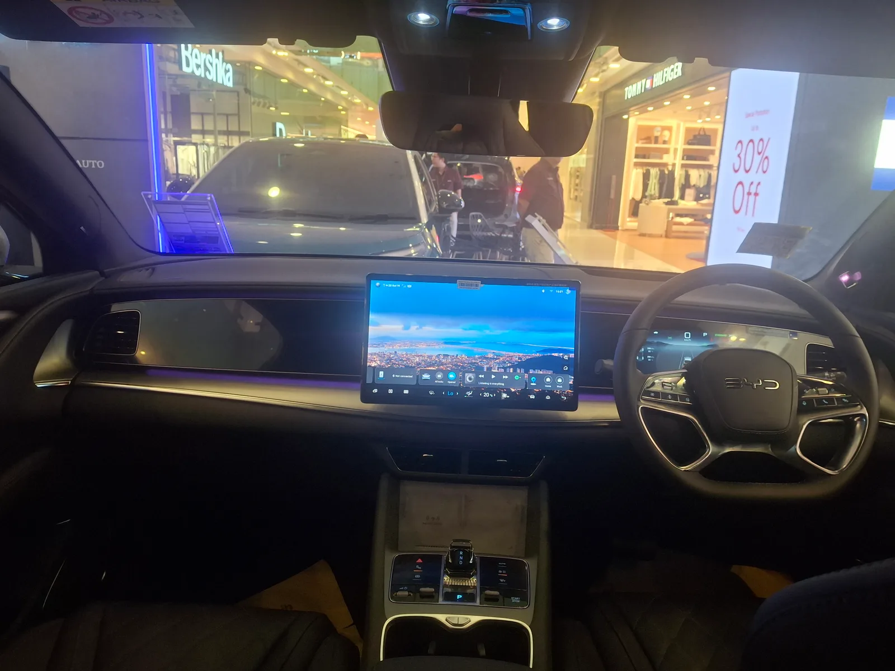

▲ BYD 씨라이언7. 국내 실사용자 163명의 종합 평점은 10점 만점에 9.71점이었다 ⓒ CarPrism
중국산 전기차를 두고 국내 여론은 여전히 갈린다. 그런데 실제로 사서 타고 있는 사람들의 평가는 다르게 나왔다. BYD 씨라이언7 RWD를 보유한 국내 오너 163명이 매긴 종합 평점은 10점 만점에 9.71점이다.
1. 가장 높은 점수는 '가격' 9.9점
항목별로 보면 가격이 9.9점으로 가장 높았다. 씨라이언7을 선택한 이유가 무엇이었는지를 그대로 보여주는 숫자다. 디자인과 주행성능이 각각 9.82점으로 뒤를 이었고, 거주성 9.8점, 품질 9.67점 순이었다.
| 평가 항목 | 점수 |
|---|---|
| 가격 | 9.9점 |
| 디자인 | 9.82점 |
| 주행성능 | 9.82점 |
| 거주성 | 9.8점 |
| 품질 | 9.67점 |
| 종합 | 9.71점 |
품질이 가장 낮은 항목이라는 점도 눈여겨볼 만하다. 9.67점 자체는 높은 점수지만, 다섯 항목 중 최하위라는 것은 오너들이 상대적으로 아쉬움을 느끼는 지점이 어디인지를 보여준다.
2. GV80에서 갈아탄 오너의 평가

▲ 씨라이언7 실내. 거주성 9.8점, 품질 9.67점을 받았다 ⓒ CarPrism
평가 중에는 제네시스 GV80을 타다 씨라이언7으로 옮긴 오너의 사례도 있었다. 이 오너는 가격, 실내 공간, 품질 마감 세 가지를 들어 만족감을 표현했다. 국산 프리미엄 SUV를 경험한 소비자도 선택지에 올려놓기 시작했다는 의미로 읽을 수 있는 대목이다.
3. 이 점수를 읽을 때 감안할 것

▲ 씨라이언7 후면. 표본이 오너로 한정된 평가라는 점을 감안해야 한다 ⓒ CarPrism
참고 이런 오너 평점은 해당 차를 직접 구매한 사람만 응답한다는 구조적 특성이 있다. 구매를 고민하다 다른 차를 선택한 사람의 판단은 반영되지 않으므로, 점수가 높게 형성되는 경향을 감안해서 읽어야 한다.
표본이 163명이라는 점도 함께 봐야 한다. 국내 판매량이 아직 크지 않은 모델인 만큼, 대규모 표본 조사와 같은 무게로 받아들이기는 어렵다. 다만 초기 오너들이 어떤 항목에 만족하고 어디에서 아쉬움을 느끼는지 방향성을 보여주는 자료로는 유효하다.
4. 정리

▲ 씨라이언7 실내 구성. 가격 항목이 9.9점으로 가장 높았다 ⓒ CarPrism
체크포인트
- 국내 오너 163명 기준 종합 9.71점, 가격 항목이 9.9점으로 최고였다.
- 품질 9.67점으로 다섯 항목 중 최하위 — 상대적 아쉬움이 있는 지점이다.
- GV80에서 갈아탄 사례처럼 국산 프리미엄 경험자도 선택지에 올리고 있다.
- 오너 한정 평가라는 표본의 성격을 감안해서 해석해야 한다.